Notkunarleiðbeiningar
Val á málheild
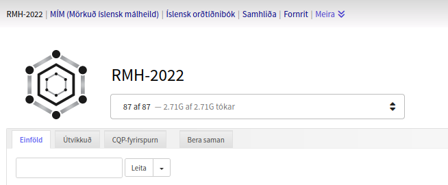
Á síðunni má skoða og vinna með mismunandi málheildir (Risamálheildin, Mörkuð íslensk málheild, Íslensk orðtíðnibók o.fl.). Efst á síðunni eru kræjur á hverja málheild, en sjálfgefin er nýjasta útgáfa Risamálheildarinnar. Ef smellt er á flipann "Meira" birtast eldri útgáfur Risamálheildarinnar.
Val á undirmálheildum
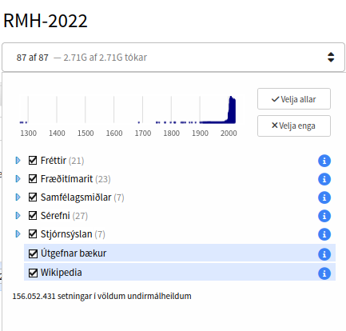
Til þess að velja hvaða undirmálheild leita á í má smella á slána efst á síðunni. Þá birtist fellivalmynd þar sem hægt er að haka (eða afhaka) við undirmálheildir. Aðeins er leitað í þeim undirmálheildum sem hakað er við.
Textunum í Risamálheildinni er raðað í flokka og hægt er að velja bæði stök textasöfn og heila efnisflokka eftir hentisemi.
Tímalínan efst í fellivalmyndinni sýnir tímadreifingu textanna, þegar það á við. Eins og sjá má er langmest af textum Risamálheildarinnar frá því um og eftir aldamótin 2000, en þó eru einhverjar undirmálheildir sem ná lengra aftur í tímann, t.d. Alþingisræður, sem ná aftur til upphafs 20. aldar, og Lög, en textarnir í því textasafni ná aftur á 13. öld.
Hægt er að fá nánari upplýsingar um fjölda setninga og tóka í textasafni með því að smella á .
Einföld leit
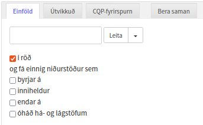
Einfaldasta leiðin til að nota Risamálheildina er að skrifa einfaldlega leitarorðið (eða -orðin) í textareitinn og smella á „Leita“.
Fyrir neðan leitarglugga er hægt að haka við fjóra valmöguleika. Sjálfkrafa er hakað við „röð“ en þá er einungis leitað að leitarorðunum í þeirri röð sem þau eru skráð. Ef hakið er tekið af þá skilar leitin einnig málsgreinum þar sem öll orðin finnast einhvers staðar í textanum.
Hægt er að haka við óháð „há- og lágstöfum“ og velja hvort leitað sé að orðum sem byrja á, enda á eða innihalda leitarstreng.Í röð
Ef hakað er við „í röð“ er einungis leitað að þeim málsgreinum þar sem leitarorðin koma fyrir í þeirri röð sem þau eru skráð. Ef leitað er að „þeim langar“ og hakað við „í röð“ skilar leit aðeins málsgreinum sem innihalda orðin „þeim“ og „langar“ saman, en ef ekki er hakað við „í röð“ fáum við allar málsgreinar þar sem bæði orðin koma fyrir.
Upphaf, endir eða inniheldur
Ef hakað er við „upphaf" eða „endir" fást niðurstöður sem annað hvort byrja eða enda á leitarstrengnum, en gætu innihaldið fleiri stafi. Þannig er hægt að leita að „maður“ og haka við „endar á“ og myndi sú leit t.a.m skila orðunum „maður“, „karlmaður“ og „kvenmaður“. Ef hakað væri við „byrjar á“ myndum við einnig fá orðið með greini, „maðurinn“. Ef hakað væri við „inniheldur“ fengjum við einnig "karlmaðurinn".
Óháð há- og lágstöfum
Valmöguleikinn „óháð há- og lágstöfum" stýrir því hvort tekið er tillit til hvort fyrsti stafur í leitarstreng sé há- eða lágstafur.
Útvíkkuð leit
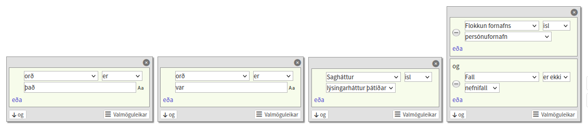
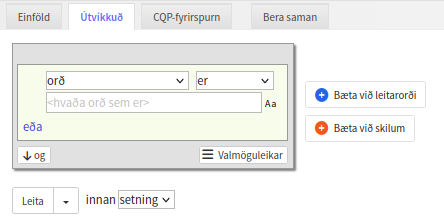
Þegar útvíkkuð leit er valin mætir manni stakt spjald (sjá til hægri). Það spjald svarar til eins leitarorðs. Hægt er að bæta við leitarorðum með því að smella á
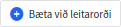
.Neðst á spjaldinu vinstra megin má sjá tvo hnappa; „eða" og „og".
Ef smellt er á „eða" birtist annar samskonar reitur fyrir leitarskilyrði. Niðurstöðurnar verða þá öll orð sem uppfylla annað hvort þeirra skilyrða sem skilgreind eru.
Ef smellt er á „og" birtist eins gluggi fyrir leitarskilyrði, fyrir neðan þann fyrri. Niðurstöður leitarinnar verða öll orð sem uppfylla bæði skilyrðin sem skilgreind eru.
Hver reitur í spjaldi er samsettur úr þremur hlutum.
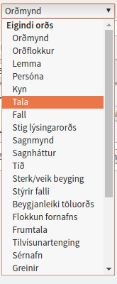
Fyrsti hlutinn er leitarþáttur. Sjálfvalinn leitarþáttur er orðmynd, en ef smellt er á „Orðmynd“ birtist fellivalmynd sem sýnir þá þætti sem hægt er að leita eftir. Meðal þeirra er uppflettimynd eða orðabókarmynd (e. lemma), og beygingarþættir svo sem kyn, tala, fall, háttur o.s.frv
Einnig er hægt að leita eftir þáttum sem eiga við um textann í heild. Þessir þættir eru kallaðir eigindi texta. Leita má eftir ritunartíma, höfundi, titli o.fl.
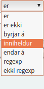
Annar hlutinn segir til um hvernig eigi að para leitarþáttinn við leitarstreng. Sjálfvalið gildi er „er“ en það skilar aðeins niðurstöðum sem passa nákvæmlega við leitarstreng. Ef smellt er á „er“ birtist einnig fellivalmynd þar sem velja má milli ýmissa pörunaraðferða, meðal annars reglulegra segða (regular expression).
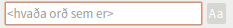
Þriðji hluti leitarreits er svo leitarstrengurinn sjálfur. Við hliðina á textareitnum er hnappur sem stillir hvort leit skuli vera stafnæm eða óstafnæm, þ.e.a.s. hvort taka eigi tillit til há- og lágstafa. Sjálfgefin er leit stafnæm.
Fyrir aðra leitarflokka en „Orðmynd" og „Lemmu" er felligluggi í stað textareits.
Ef smellt er á birtast þrír valmöguleikar: „Endurtaka", „Byrjun setningar" og „Endir setningar". Ef smellt er á Endurtaka þá er hægt að segja til um hversu oft á að endurtaka orðið sem skilgreint er á spjaldinu. Þessi valmöguleiki kemur sér vel þegar eitt eða fleiri orð mega vera á milli orða, eða að ákveðið orð (orðflokkur, kyn...) megi, en þurfi ekki, að vera á milli annarra leitarorða.
Ef smellt er á „Byrjun setningar" eða „Endir setningar" birtist nýr gluggi sem skilgreinir mörk setningar. Hægt er að færa gluggana til, eins og aðra glugga, en ekki þjónar neinum tilgangi að hafa gluggana á milli orða þar sem aðeins er leitað innan setningar en ekki yfir mörk setninga.
Dæmi um samsett leitarspjald
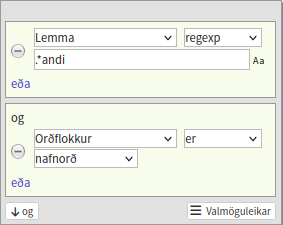
Með með því að setja saman marga reiti má útbúa flókin leitarspjöld. Tökum dæmi.
Í dæminu hér til vinstri var fyrst valinn leitarþátturinn „Lemma“, sem er einnig kallaður uppflettimynd. Sambanburðaraðferðin var stillt sem regexp, en notendur eru hvattir til að nýta sér mátt reglulegra segða.
Reglulega segðin sem er notuð í leitinni er „.*andi“, en það táknar einhver stafaruna sem endar á -andi. Punktur stendur fyrir hvaða staf sem er í reglulegum segðum og stjarna stendur fyrir endurtekningu.
Eftir að reglulega segðin hefur verið skrifuð er smellt á „og“. Þá bætist við annar reitur og hann er fylltur út með skipuninni „Orðflokkur er 'Nafnorð'“.
Hér er semsagt verið að leita að svokölluðum gerund-nafnorðum eða sagnarnafnorðum, þ.e.a.s nafnorðum sem eru mynduð út frá lýsingarhætti sagnorða. Hér má svo sjá niðurstöður leitarinnar:
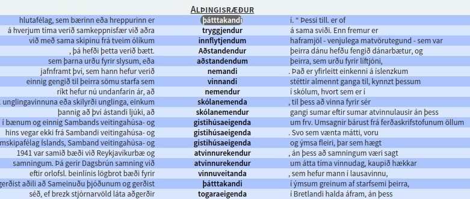
Bæta má við fleiri leitarspjöldum með því að smella á hnappinn hægra megin við leitarspjöld:
Dæmi um útvíkkaða leit
Með þessi tæki að vopni má framkvæma nákvæmar leitir. Til dæmis má leita að einni algengustu birtingarmynd nýju þolmyndarinnar; orðasamböndum á við „það var hrint mér“ og „það var hitt hann“.
Fyrri tvö orðin í orðasambandinu eru þá einfaldlega „það“ og „var“, þriðja orðið er sagnorð í lýsingarhætti þátíðar og hið fjórða er persónufornafn í aukafalli. (ath. að aðeins er um nýju þolmyndina að ræða ef „það“ er leppfrumlag, þ.e.a.s. vísar ekki í neinn nafnlið.)
Fyrsta spjaldið inniheldur þá leitarskilyrðið „Orðmynd er 'það'“:
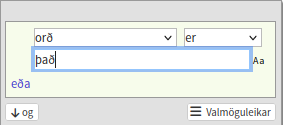
Nú bætum við öðru spjaldi við með því að smella á og fyllum inn í það „Orðmynd er 'var'“:
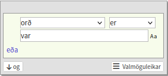
Þá bætum við enn við öðru spjaldi. Við viljum fá sagnorð í lýsingarhætti þátíðar svo við veljum leitarþáttinn „Sagnháttur“. Þá breytist textareiturinn í fellivalmynd og við getum smellt á hana og valið „Lýsingarháttur þátíðar“:
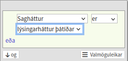
Að lokum bætum við við fjórða spjaldinu. Það uppfyllir tvö skilyrði: Í fyrra lagi er orðið persónufornafn og í öðru lagi er það í aukafalli (þf. þgf. eða ef.). Byrjum á fyrra skilyrðinu. Við veljum leitarþáttinn „Flokkur fornafns“ og veljum svo „Persónufornafn“. Þá er smellt á „og“ (þar sem bæði skilyrðin þurfa að vera uppfyllt samtímis.) Þá birtist annar reitur að neðan. Í honum veljum við leitarþáttinn „Fall“. Við viljum að fallið sé aukafall, þ.e. ekki nefnifall svo við smellum á „er“ og breytum því í „er ekki“. Þá veljum við „Nefnifall“ úr valmyndinni. Þá ætti spjaldið að líta svona út:
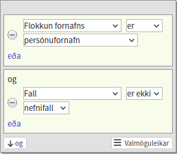
Þá er leitin tilbúin og einfaldlega smellt á „Leita“ og beðið eftir niðurstöðunum.
Sérstök textaeigindi
Sum eigindi eiga bara við ákveðin textasöfn. T.d. er hægt að takmarka leit í Alþingisræðum við ræður eftir ákveðna þingmenn.
Það er gert með því að velja „Þingmaður" undir „eigindi texta“ í fellivalmyndinni á leitarspjaldinu og slá síðan inn fullt nafn þingmannsins.
Hér til hægri má einnig sjá dæmi um leitarspjald sem leitar eftir eftirfarandi skilyrði:
„Þingmaður er 'Ólafur Ragnar Grímsson' OG lemma er 'forseti'“
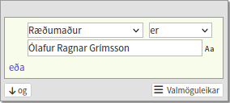
Þessi leit skilar öllum tilfellum úr þingræðum þar sem Ólafur Ragnar Grímsson hefur sagt einhverja orðmynd orðsins forseti.
Einnig er hægt að takmarka leit við ákveðið tímabil. Það er gert með því að velja textaeigindin „Tímabil“ og stilla síðan neðra og efra mark dagsetningar.
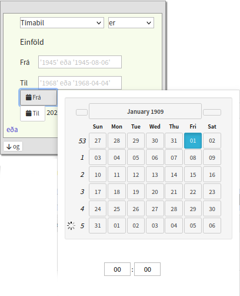
CQP fyrirspurnamálið
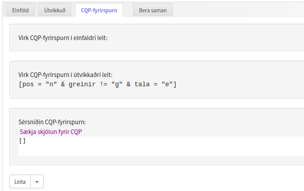
Leitarvélin byggir á bakenda sem nýtir sér fyrirspurnamálið CQP (Corpus Query Processor) Query Language. Einföld og útvíkkuð leit bjóða upp á myndræna uppbyggingu á fyrirspurnum í því máli en hægt er að skrifa fyrirspurnir handvirkt ef flipinn CQP-fyrirspurn er valinn.
ATH að ekki er mælt með því að byrjendur skrifi sínar eigin CQP fyrirspurnir þar sem yfirleitt er hagkvæmara og einfaldara að byggja þær upp myndrænt í útvíkkaðri leit. Sú aðferð hefur þó takmarkanir og ef farið er út fyrir þær gæti þurft að grípa til handsmíðaðra fyrirspurna.
Ef leitir hafa þegar verið skrifaðar inn í hina tvo flipana má sjá hvernig þær skipanir birtast í CQP fyrirspurnamálinu og breyta þeim skipunum eða skrifa sína eigin fyrirspurn. Í dæminu hér að ofan hefur notandi ekki enn notað einfalda leit og því birtist enginn leitarstrengur í efsta glugganum („Virk CQP-fyrirspurn í einfaldri leit“). Í útvíkkaðri leit hefur notandi hins vegar leitað að nafnorði í eintölu, án greinis. Notandi gæti afritað þessa CQP-fyrirspurn og límt hana í gluggann fyrir neðan, „Sérniðin CQP-fyrirspurn“ og breytt henni að vild, eða búið til nýja skipun frá grunni.
Hægt er að nálgast leiðbeiningar fyrir málið með þessum hlekk en best er að finna út úr þeim atriðum sem eru einstök innan Risamálheildarinnar með því að byggja upp fyrirspurnir í útvíkkaðri leit og skoða hvernig þær birtast í CQP flipanum.
Niðurstöður fyrirspurna
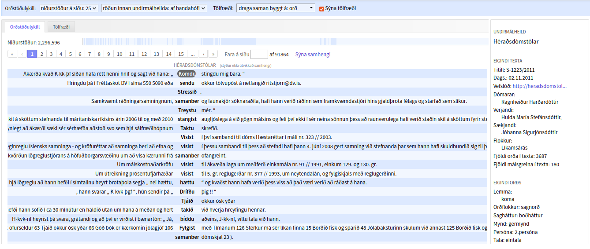
Niðurstöður leita í risamálheildinni eru á formi svokallaðra orðstöðulykla (e. KWIC, Keyword in Context). Þannig birtast öll dæmi sem koma upp úr leitinni eins og þau komu fyrir í frumtextanum, innan setningar. Í orðstöðulyklinum má smella á hvert orð, en þá birtist reitur hægra megin á síðunni. Reiturinn inniheldur bæði upplýsingar um textann sem dæmið kemur úr (eigindi texta) og greiningu á orðinu sjálfu (eigindi orðs). Einnig er hægt að færa sig á milli orða í niðurstöðunum með því að nota pílurnar á lyklaborðinu.
Niðurstöður eru flokkaðar eftir undirmálheildum (þegar það á við) og er sjálfgefið að 25 færslur birtist á síðu. Hægt er að fara á milli síða með því að nota hnappana efst í reitnum. Þar fyrir ofan er strimill sem er skipt í mislanga reiti. Hér er sýnt á myndrænan hátt hvernig niðurstöður skiptast á undirmálheildir og hægt er að smella á reitina til að fara á milli undirmálheilda.
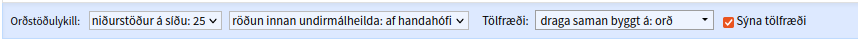
Í stikunni efst má stilla fjölda niðurstaðna á síðu. Sjálfgefið er að 25 færslur birtist en hægt er að fá allt að þúsund færslur í einu. Einnig er hægt að raða færslum eftir leitarorði eða undanfarandi eða eftirfarandi umhverfi, en þá er raðað eftir næsta orði á undan eða eftir leitarorðum.
Beint fyrir neðan stikuna eru tveir flipar, „Orðstöðulykill“ og „Tölfræði“. Ef smellt er á „Tölfræði“ birtast tölfræðiupplýsingar á skjánum í stað orstöðulyklanna.
Tölfræði
Í verkfærastikunni má einnig sjá fellivalmynd fyrir tölfræði. Til hliðar við hana er sjálfgefið hak við „Sýna tölfræði“. Ef ekki er hakað í reitinn þá tekur leit skemmri tíma en tölfræðiupplýsingar eru þá ekki sóttar.
Leitarvél Risamálheildarinnar býður upp á að draga saman tíðniupplýsingar úr niðurstöðum leita. Þannig má fá upplýsingar um það hvaða orðmynd ákveðins orðs er algengust, hvaða þingmaður hefur sagt tiltekið orðasamband oftast, eða hvaða orðflokki orðmyndin „að“ tilheyrir oftast svo nokkur dæmi séu tekin.
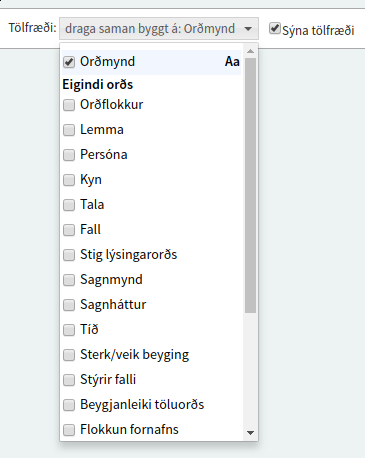
Niðurstöðunum má raða eftir tíðni í hverri undirmálheild fyrir sig og ef smellt er á línu í töflunni opnast leitargluggi sem inniheldur orðstöðulykla fyrir einungis þær niðurstöður sem eiga við þá röð.
Hér að neðan má sjá dæmi um tölfræðiniðurstöður fyrir leitina [lemma = "leitarorð"], dregið saman fyrir orðmynd.
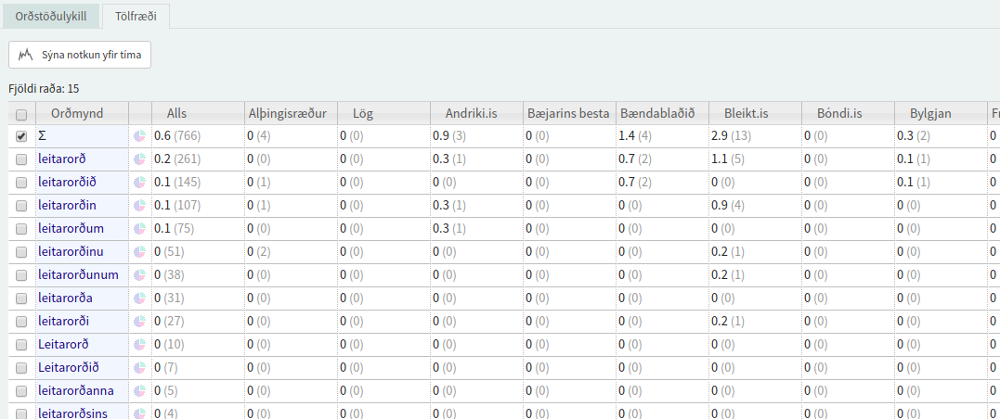
Graf
Hægt er að skoða þróun orðtíðni yfir tíma með því að smella á hnappinn
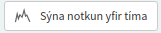
í tölfræðiflipanum. Þá birtist nýr flipi þar sem inn hleðst línurit yfir orðtíðni sem fall af tíma. Mögulegt er að birta sömu upplýsingar sem súlurit eða sem töflu, en síðastnefndi kosturinn er gagnlegur ef skoða á gögnin nánar í töflureikni eða tölfræðiforriti (Sjá hér að neðan).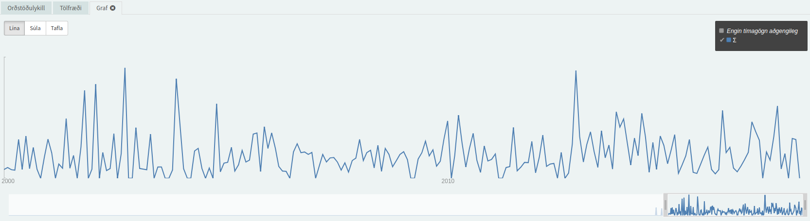
Stilla má tímabilið sem birtist á grafinu með því að draga til handföng á rekkanum fyrir neðan grafið. Ef tímabilið er stillt nógu smátt þá eykst nákvæmni töflunnar. Það getur þó tekið nokkrar sekúndur að hlaða uppfærðu grafi.
Úttak og skil leitarvélar
Úttak fyrir töflureikna (CSV & TSV)
Til þess að beita töflureiknum og tölfræðihugbúnaði á við Microsoft Excel og SPSS á útkomur leita í Risamálheildinni er mikilvægt að fá gögnin á nothæfu sniði fyrir slíkan hugbúnað. Leitarvélin býður upp á að hala niður bæði leitarniðurstöðum og tölfræðitöflum sem annað hvort CSV (Comma Separated Value) eða TSV (Tab Separated Value). Fyrir leitarniðurstöðurnar er smellt á hnappinn „Hala síðu niður sem...“ sem er staðsettur neðarlega til hægri á síðunni. Svo er sá möguleiki valinn sem hentar.
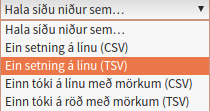
Fyrir tölfræðitöflur er aðferðin svipuð. Fyrst velur maður töfluflipann á niðurstöðusíðunni. Þá má sjá litla valmynd neðst til vinstri á síðunni. Þar velur maður hvort hala á niður hlutfallslegum tíðnum eða heildartíðnum, og jafnframt hvort CSV eða TSV gildi skulu notuð. Síðan er smellt á hnappinn sem á stendur „Keyra út“. Þá breytist texti hnappsins í „Hala niður“ og maður smellir aftur til þess að hala niður gögnunum.
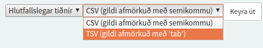
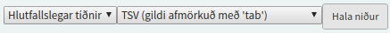
JSON
Bakendi Korp skilar gögnum á JSON sniði sem framendinn vinnur síðan úr. Hægt er að sækja hráu JSON gögnin með því að framkvæma leit og smella svo á JSON takkann sem er staðsettur neðarlega til hægri á síðunni. Slíkt snið hentar vel til meðhöndlunar með forritunarmálum á borð við JavaScript og Python. Athugið að þegar gögn eru sótt, hvort heldur sem er á CSV, TSV eða JSON sniði, þá eru aðeins þær færslur, sem birtast á skjánum hverju sinni, sóttar.
Áhugasömum forriturum viljum við einnig benda á að hægt er að sækja frumgögn málheildann, ásamt fleiri mállegum gagnasöfnum, á varðveislusvæði CLARIN-IS
Samanburður tveggja leitarniðurstaða
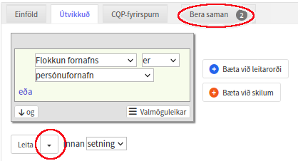
Hægt er að gera samanburð á niðurstöðum úr tveimur leitum. Til að gera slíkan samanburð þarf fyrst að vista tvær leitir. Þetta er gert með því að búa fyrst til leitarorðið (fylla inn í leitarspjald) og smella síðan á örina hægra megin við leitarhnappinn. Þetta gerir manni kleift að vista leitina sjálfa með nafni að eigin vali, í stað þess að framkvæma hana. Þegar tvær leitir eru vistaðar eg hægt að smella á flipann "Bera saman" sem er hægra megin við leitarflipana þrjá. Valdar eru þær tvær leitir sem bera á saman og í framhaldi á hvaða eigind að að framkvæma samanburðinn.